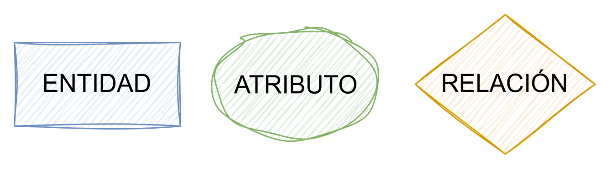
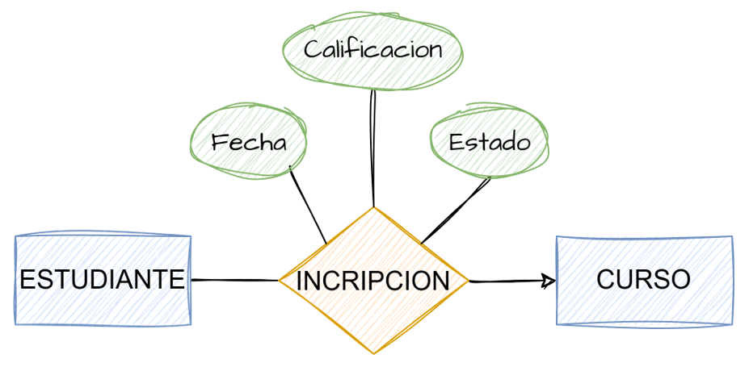
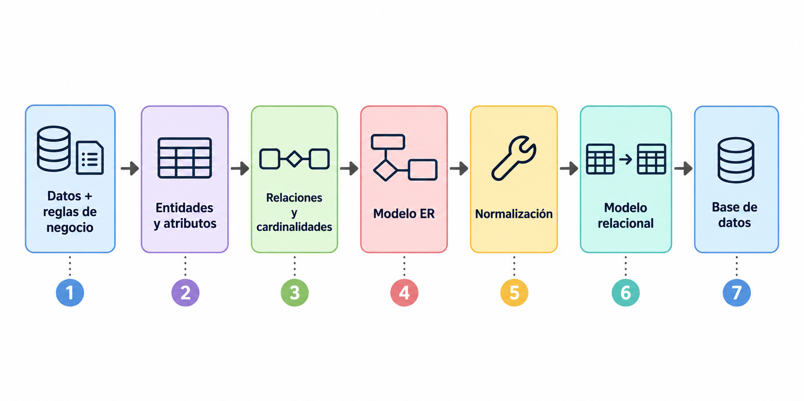

Del problema al modelo relacional
Universidad Autónoma de Ciudad Juárez
agosto 2026
Intentamos crear una representación de la información y las reglas que existen en un negocio.
Queremos convertirlas en una estructura que:
Antes de crear la estructura debemos saber
El diagrama ER representa estas ideas mediante:

Una entidad representa una persona, objeto, lugar, evento o concepto del mundo real que puede identificarse y sobre el cual necesitamos almacenar información.
Ejemplos:
Pregunta clave:
¿Sobre qué cosas necesito guardar información?
Un atributo representa una característica o propiedad de una entidad que necesitamos conocer y almacenar para describirla o identificarla.
Pregunta clave:
¿Qué información necesitamos conocer de cada entidad?
Cada registro debe poder identificarse de manera única dentro de una tabla.
La llave primaria (Primary Key o PK) es el atributo, o conjunto de atributos, que permite identificar de manera única cada registro (renglón).
Cliente
cliente_id (PK)cliente_id permite distinguir a un cliente de todos los demás.
Una llave primaria debe ser única, no puede ser nula, debe identificar un solo registro.
Las entidades no existen de manera aislada.

Una relación describe cómo se conectan dos entidades dentro del negocio.
Pregunta clave:
¿Cómo se relacionan estas entidades entre sí?
La cardinalidad indica cuántos elementos de una entidad pueden relacionarse con otra, de acuerdo con las reglas del negocio.
One-to-one (1:1) Cada elemento de una entidad se relaciona con uno de la otra.
One-to-many (1:N) Un elemento de una entidad puede relacionarse con muchos de la otra.
Many-to-many (N:M) Muchos elementos de una entidad pueden relacionarse con muchos de la otra.
Pregunta clave:
Para cada elemento de una entidad, ¿con cuántos elementos de la otra puede relacionarse?

Una relación N:M normalmente necesita convertirse en una nueva estructura.

Además, la relación puede tener sus propios datos.
El modelo conceptual comienza a convertirse en una base de datos.
Entidad → Tabla
Atributo → Columna
Identificador → Primary Key
Relación → Foreign Key / tabla asociativa
Tenemos:
Ahora necesitamos preguntarnos:
¿La estructura que diseñamos tiene sentido?
La normalización nos ayuda a revisar nuestro diseño.
Buscamos principalmente:
Definición formal:
El valor de una columna debe ser una entidad atómica, indivisible, excluyendo así las dificultades que podría conllevar el tratamiento de un dato formado de varias partes.
En palabras simples:
Un solo valor por celda: no debemos almacenar listas o múltiples valores juntos.
Un valor indivisible: si necesitas usar sus partes por separado, sepáralas en columnas.
Cliente
| cliente_id | nombre | teléfonos |
|---|---|---|
| C001 | Ana | 656-111-0000, 656-222-0000 |
| C002 | Luis | 656-333-0000 |
Una celda contiene más de un teléfono.
Cliente
| cliente_id | nombre |
|---|---|
| C001 | Ana |
| C002 | Luis |
Teléfono
| cliente_id | lada | teléfono |
|---|---|---|
| C001 | 656 | 111-0000 |
| C001 | 656 | 222-0000 |
| C002 | 915 | 333-0000 |
Ahora:
Definición formal:
Una relación se encuentra en Segunda Forma Normal (2NF) cuando está en Primera Forma Normal (1NF) y todos los atributos no primos presentan dependencia funcional completa respecto de la llave primaria, es decir, no existen dependencias parciales.
En palabras simples:
Primero debe cumplir 1NF.
Si la llave primaria está formada por varias columnas: los demás atributos deben depender de toda la llave, no solamente de una parte.
Pregunta clave: ¿necesito toda la llave para determinar este dato?
Inscripción
| estudiante_id | curso_id | estudiante_nombre | curso_nombre | calificación |
|---|---|---|---|---|
| E001 | C101 | Ana | Bases de Datos | 95 |
| E001 | C102 | Ana | Programación | 88 |
| E002 | C101 | Luis | Bases de Datos | 91 |
Llave primaria: (estudiante_id, curso_id)
estudiante_nombre depende solamente de estudiante_id.curso_nombre depende solamente de curso_id.calificación sí depende de la combinación estudiante_id + curso_id.Si un atributo depende solamente de una parte de la llave, no pertenece aquí.
Estudiante
| estudiante_id | nombre |
|---|---|
| E001 | Ana |
| E002 | Luis |
Curso
| curso_id | nombre |
|---|---|
| C101 | Bases de Datos |
| C102 | Programación |
Inscripción
| estudiante_id | curso_id | calificación |
|---|---|---|
| E001 | C101 | 95 |
| E001 | C102 | 88 |
| E002 | C101 | 91 |
Ahora cada atributo depende de la llave completa de la tabla en la que se encuentra.
Definición formal:
Una relación se encuentra en Tercera Forma Normal (3NF) cuando está en Segunda Forma Normal (2NF) y no contiene dependencias transitivas; es decir, ningún atributo que no forma parte de la llave depende funcionalmente de otro atributo que tampoco forma parte de la llave.
En palabras simples:
Primero debe cumplir 2NF.
Los atributos deben depender directamente de la llave, no de otro atributo.
Pregunta clave: ¿este dato describe directamente a la entidad o describe a otra cosa?
Empleado
| empleado_id | nombre | departamento_id | departamento_nombre |
|---|---|---|---|
| E001 | Ana | D01 | Recursos Humanos |
| E002 | Luis | D02 | Ventas |
| E003 | María | D01 | Recursos Humanos |
departamento_nombre no depende directamente de empleado_id.
Depende de departamento_id:
empleado_id → departamento_id → departamento_nombre
Por lo tanto, tenemos una dependencia transitiva.
Empleado
| empleado_id | nombre | departamento_id |
|---|---|---|
| E001 | Ana | D01 |
| E002 | Luis | D02 |
| E003 | María | D01 |
Departamento
| departamento_id | nombre |
|---|---|
| D01 | Recursos Humanos |
| D02 | Ventas |
Ahora cada atributo describe directamente a la entidad a la que pertenece.
departamento_nombre depende de departamento_id, por lo que se almacena en Departamento y no en Empleado.
1NF: ¿Cada celda contiene un solo valor y está suficientemente dividido? → Un valor por celda.
2NF: ¿Necesito toda la llave para conocer este dato? →Si depende solo de una parte de la llave, sepáralo.
3NF: ¿Este dato depende de la llave o de otro dato? → Si depende de otro atributo, probablemente pertenece en otra tabla.
No se trata de memorizar reglas.
Se trata de poder preguntar:

Ingeniería de Datos · UACJ